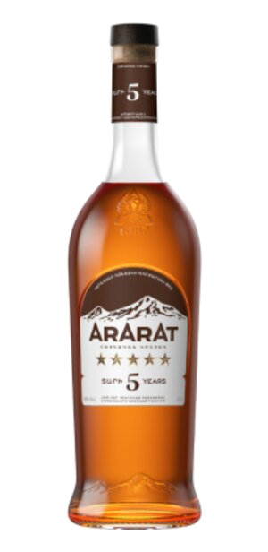

В наличии


Объём указан по данным каталога и по фотографии не проверялся. Наличие и стоимость подтверждает оператор, он же подскажет, какой сувенир добавить к заказу. Корзина — список на вашем устройстве, заказ она не отправляет.
Другие позиции раздела «Коньяк» и каталога